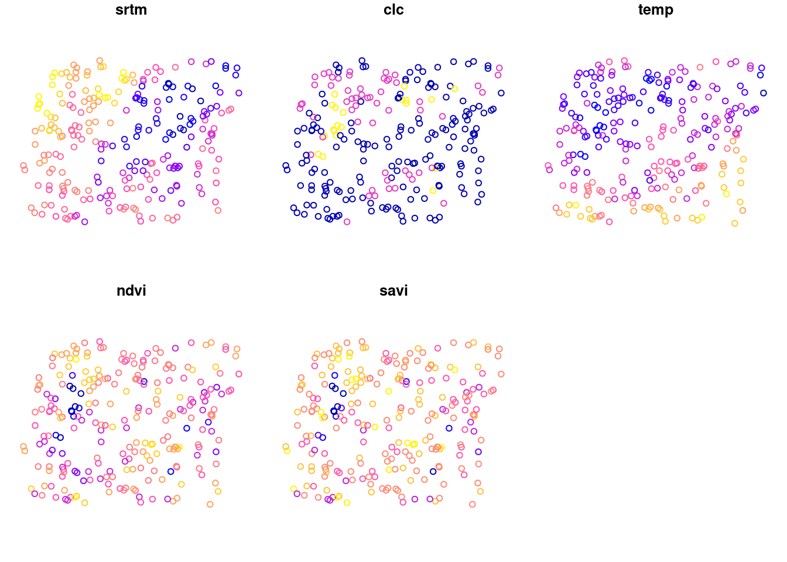
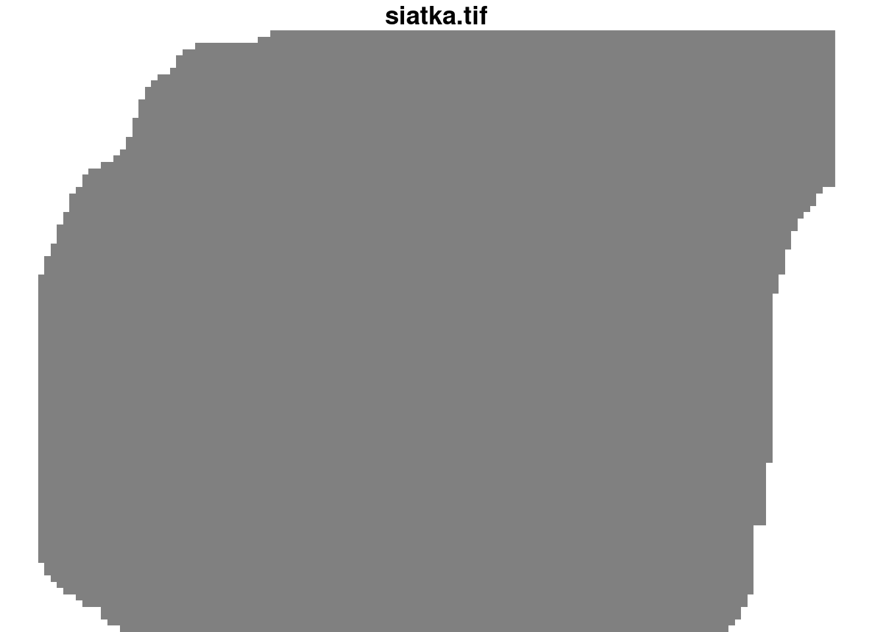
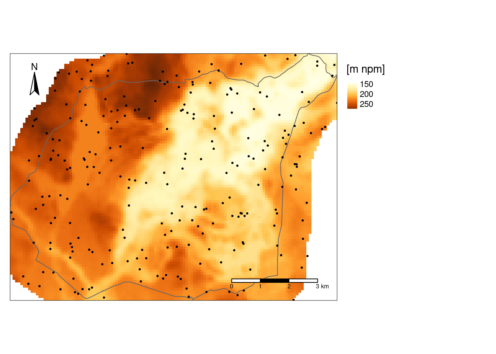
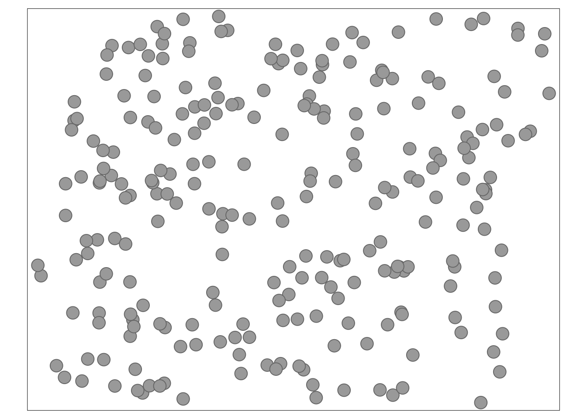
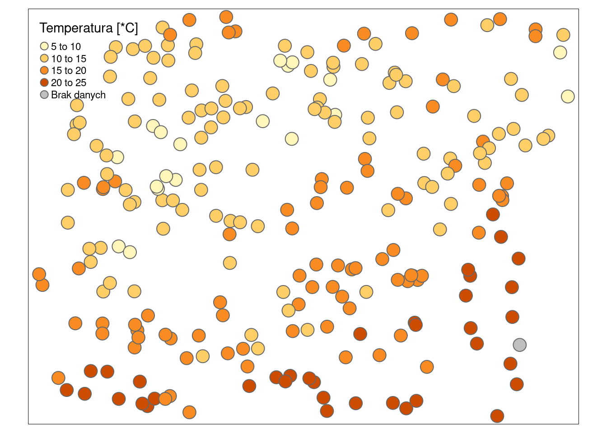
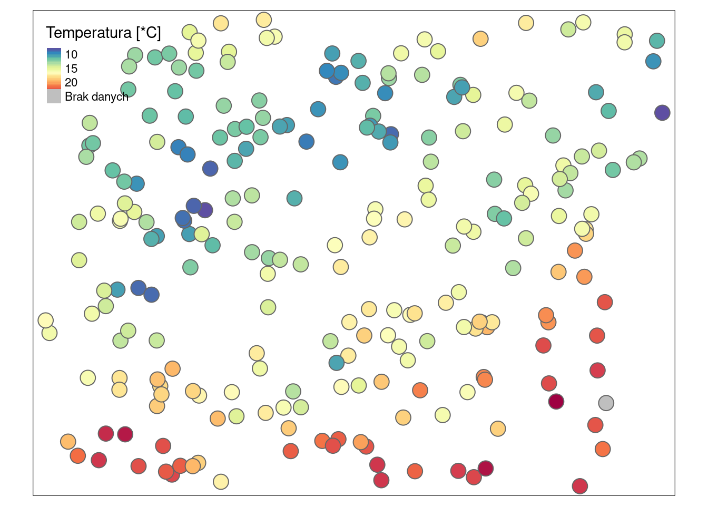
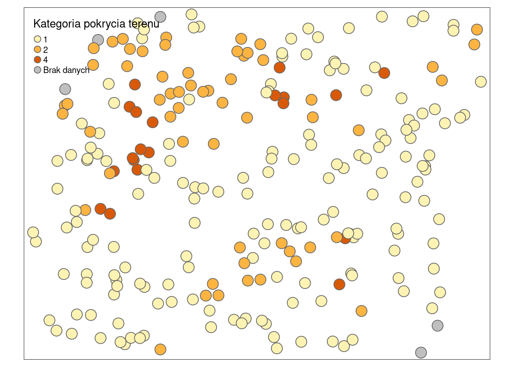
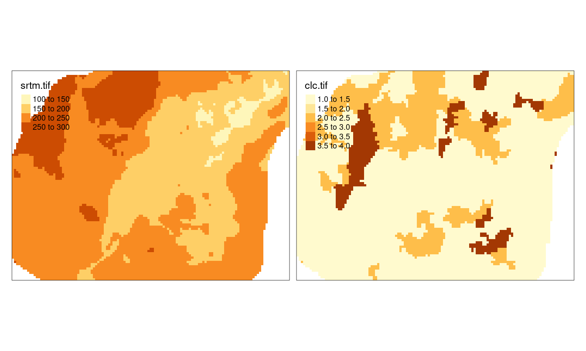
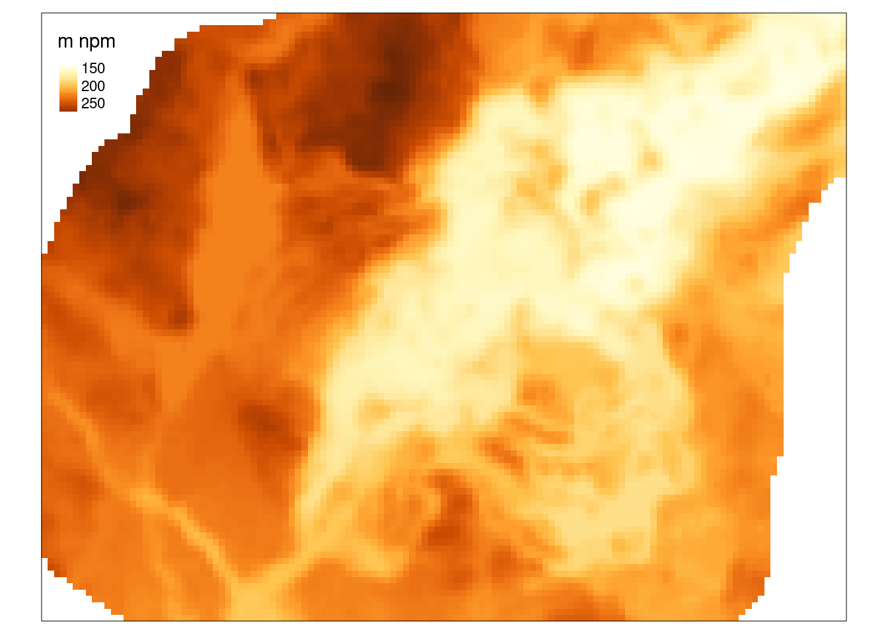
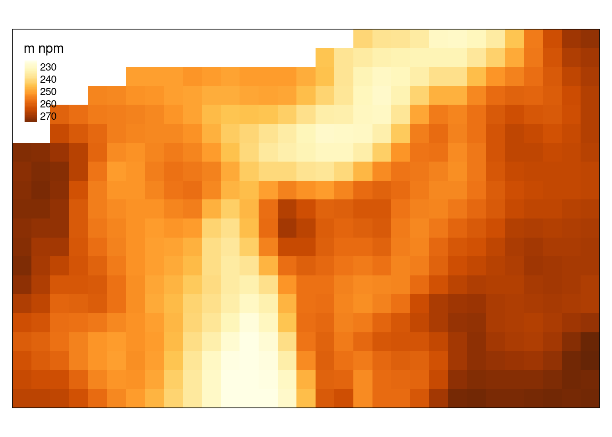

2 R a dane przestrzenne
2.1 Wprowadzenie
2.1.1 Reprezentacja danych nieprzestrzennych
Skrypty i funkcje w języku R są zbudowane na podstawie szeregu obiektów nieprzestrzennych. Do wbudowanych typów obiektów należą:
- Wektory atomowe (ang. vector):
- liczbowe (ang. integer, numeric) -
c(1, 2, 3)ic(1.21, 3.32, 4.43) - znakowe (ang. character) -
c("jeden", "dwa", "trzy") - logiczne (ang. logical) -
c(TRUE, FALSE)
- liczbowe (ang. integer, numeric) -
- Ramki danych (ang. data.frame) - to zbiór zmiennych (kolumn) oraz obserwacji (wierszy) zawierających różne typy danych
- Macierze (ang. matrix) - to zbiór kolumn oraz wierszy zawierających wektory jednego typu
- Listy (ang. list) - to sposób przechowywania obiektów o różnych typach i różnej długości
Dokładniejsze wyjaśnienie powyższych typów obiektów można znaleźć w rozdziałach 5 i 7 książki Elementarz programisty: Wstęp do programowania używając R.
2.1.2 Pakiety
R zawiera także wiele funkcji pozwalających na przetwarzanie, wizualizację i analizowanie danych przestrzennych. Zawarte są one w szeregu pakietów (zbiorów funkcji), między innymi:
- Obsługa danych przestrzennych - sf, stars, terra, raster, sp
- Geostatystyka - gstat, geoR
Więcej szczegółów na ten temat pakietów R służących do analizy przestrzennej można znaleźć pod adresem https://cran.r-project.org/view=Spatial.
2.1.3 Reprezentacja danych przestrzennych
Dane przestrzenne mogą być reprezentowane w R poprzez wiele różnych klas obiektów z użyciem różnych pakietów R.
Przykładowo dane wektorowe mogą być reprezentowane poprzez obiekty klasy Spatial* z pakietu sp oraz obiekty klasy sf z pakietu sf.
Pakiet sf oparty jest o standard OGC o nazwie Simple Features.
Większość jego funkcji zaczyna się od prefiksu st_.
Ten pakiet definiuje klasę obiektów sf, która jest sposobem reprezentacji przestrzennych danych wektorowych.
Pozwala on na stosowanie dodatkowych typów danych wektorowych (np. poligon i multipoligon to dwie oddzielne klasy), łatwiejsze przetwarzanie danych, oraz obsługę przestrzennych baz danych takich jak PostGIS.
Pakiet sf jest używany przez kilkadziesiąt dodatkowych pakietów R, jednak wiele metod i funkcji nadal wymaga obiektów klasy sp.
Porównanie funkcji dostępnych w pakietach sp i sf można znaleźć pod adresem https://github.com/r-spatial/sf/wiki/Migrating.
Więcej o pakiecie sf można przeczytać w rozdziale drugim książki Geocomputation with R.
Dane rastrowe są reprezentowane między innymi poprzez klasę SpatialGridDataFrame z pakietu sp, obiekty klasy Raster* z pakietu raster, SpatRaster z pakietu terra, oraz klasę stars z pakietu stars.
Pakiet stars (scalable, spatiotemporal tidy arrays) pozwala na obsługę różnorodnych danych przestrzennych i czasoprzestrzennych reprezentowanych jako kostka danych (ang. data cubes). Obejmuje to, między innymi, regularne i nieregularne dane rastrowe, ale także czasoprzestrzenne dane wektorowe. Ten pakiet zapewnia klasy i metody do wczytywania, przetwarzania, wizualizacji czy zapisywania kości danych. Posiada on także wbudowaną integrację z pakietem sf.
2.1.4 GDAL/OGR
Pakiety sf czy stars wykorzystują zewnętrzne biblioteki GDAL/OGR w R do wczytywania i zapisywania danych przestrzennych. GDAL to biblioteka zawierająca funkcje służące do odczytywania i zapisywania danych w formatach rastrowych, a OGR to biblioteka służąca to odczytywania i zapisywania danych w formatach wektorowych.
2.1.5 PROJ
Dane przestrzenne powinny być zawsze powiązane z układem współrzędnych - w ten sposób możliwe jest określenie gdzie są one położone, a także jak wykonywane są na nich operacje przestrzenne.
Biblioteka PROJ jest używana przez pakiety sf i stars do określania i konwersji układów współrzędnych.
Układy współrzędnych mogą być opisywane na szereg sposobów, np. poprzez systemy kodów.
Najpopularniejszym z nich jest system kodów EPSG (ang. European Petroleum Survey Group), który pozwala on na łatwe identyfikowanie układów współrzędnych.
Przykładowo, układ PL 1992 może być określony jako "EPSG:2180".
Taki sposób określania układów współrzędnych wymaga jedynie znajomości odpowiedniego numery dla danego obszaru.
Dane przestrzenne przechowują też opis tego układu współrzędnych w bardziej złożony sposób nazwany WKT2. Zawiera on opis elementów związanych z konkretnym układem współrzędnych, takich jak jednostka, elipsoida odwzorowania, itd.
Warto też wiedzieć, że przez wiele lat główną rolę pełniła reprezentacja proj4string, np. "+proj=tmerc +lat_0=0 +lon_0=19 +k=0.9993 +x_0=500000 +y_0=-5300000 +ellps=GRS80 +towgs84=0,0,0,0,0,0,0 +units=m +no_defs", która określała własności układu współrzędnych.
Współcześnie jednak ta reprezentacja nie jest zalecana do użycia.
Strona https://epsg.org/ zawiera bazę danych układów współrzędnych.
2.1.6 Układy współrzędnych
Dane przestrzenne mogą być reprezentowane używając układów współrzędnych geograficznych lub prostokątnych płaskich.
W układzie współrzędnych geograficznych proporcje pomiędzy współrzędną oznaczającą długość geograficzną (X) a oznaczającą szerokość geograficzną (Y) nie są równe 1:1. Realna wielkość oczka siatki (jego powierzchnia) jest zmienna, a jednostka mapy jest abstrakcyjna w tych układach. W efekcie nie pozwala to na proste określanie odległości czy powierzchni. Powyższe cechy układów współrzędnych geograficznych powodują, że do większości algorytmów w geostatystyce wykorzystywane są układy współrzędnych prostokątnych płaskich.
Układy współrzędnych prostokątnych płaskich określane są w miarach liniowych (np. metrach). W tych układach proporcje między współrzędną X a Y są równe 1:1, a wielkość oczka jest stała.
2.1.7 GEOS
Pakiet sf używa biblioteki GEOS do wykonywania operacji przestrzennych. Przykładowe funkcje tej biblioteki to tworzenie buforów, wyliczanie centroidów, określanie relacji topologicznych (np. przecina, zawiera, etc.) i wiele innych.
2.2 Import danych
R pozwala na odczytywanie danych przestrzennych z wielu formatów.
Do najpopularniejszych należą dane tekstowe z plików o rozszerzeniu .csv, dane wektorowe z plików .shp, dane rastrowe z plików w formacie GeoTIFF, oraz bazy danych przestrzennych z plików rozszerzeniu .gpkg.
2.2.1 Format .csv (dane punktowe)
Dane z plików tekstowych (np. rozszerzenie .csv) można odczytać za pomocą uogólnionej funkcji read.table() lub też funkcji szczegółowych - read.csv() lub read.csv2().
dane_punktowe = read.csv("dane/punkty.csv")
head(dane_punktowe)## srtm clc temp ndvi savi x y
## 1 175.7430 1 13.852222 0.6158061 0.4189449 750298.0 716731.6
## 2 149.8111 1 15.484209 0.5558816 0.3794864 753482.9 717331.4
## 3 272.8583 NA 12.760814 0.6067462 0.3745572 747242.5 720589.0
## 4 187.2777 1 14.324648 0.3756170 0.2386246 755798.9 718828.1
## 5 260.1366 1 15.908549 0.4598393 0.3087599 746963.5 717533.5
## 6 160.1416 2 9.941118 0.5600288 0.3453627 756801.6 720474.1Po wczytaniu za pomocą funkcji read.csv(), nowy obiekt (np. dane_punktowe) jest reprezentowany za pomocą klasy nieprzestrzennej data.frame.
Aby obiekt został przetworzony do klasy przestrzennej, konieczne jest określenie które kolumny zawierają informacje o współrzędnych; w tym wypadku współrzędne znajduję się w kolumnach x oraz y.
Nadanie układu współrzędnych odbywa się poprzez funkcję st_as_sf().
## Simple feature collection with 248 features and 5 fields
## Geometry type: POINT
## Dimension: XY
## Bounding box: xmin: 745592.5 ymin: 712642.4 xmax: 756967.8 ymax: 721238.7
## CRS: NA
## First 10 features:
## srtm clc temp ndvi savi geometry
## 1 175.7430 1 13.852222 0.6158061 0.4189449 POINT (750298 716731.6)
## 2 149.8111 1 15.484209 0.5558816 0.3794864 POINT (753482.9 717331.4)
## 3 272.8583 NA 12.760814 0.6067462 0.3745572 POINT (747242.5 720589)
## 4 187.2777 1 14.324648 0.3756170 0.2386246 POINT (755798.9 718828.1)
## 5 260.1366 1 15.908549 0.4598393 0.3087599 POINT (746963.5 717533.5)
## 6 160.1416 2 9.941118 0.5600288 0.3453627 POINT (756801.6 720474.1)
## 7 192.9223 2 13.514751 0.6009588 0.3737249 POINT (752698 718623.6)
## 8 234.9989 1 12.919225 0.4979195 0.2978503 POINT (749399.8 716955.2)
## 9 228.7312 1 19.247132 0.3819634 0.2077981 POINT (748766.6 713889)
## 10 240.5474 2 10.529105 0.5795159 0.3805268 POINT (749290.4 718861)Ważne, ale nie wymagane, jest także dodanie informacji o układzie przestrzennym danych za pomocą funkcji st_set_crs().
dane_punktowe_sf = st_set_crs(dane_punktowe_sf, value = "EPSG:2180")Proste wizualizacje uzyskanych danych klasy przestrzennej, np. sf czy stars, można uzyskać za pomocą funkcji plot() (rycina 2.1 i 2.2).
plot(dane_punktowe_sf)
Rycina 2.1: Efekt działania funkcji plot na obiekcie klasy sf.
2.2.2 Dane wektorowe
Dane wektorowe (np. w formacie GeoPackage czy ESRI Shapefile) można odczytać za pomocą funkcji read_sf() z pakietu sf.
Przyjmuje ona co najmniej jeden argument - dsn, który określa główny plik w którym znajdują się dane.
2.2.3 Dane rastrowe
Istnieje kilka sposobów odczytu danych rastrowych w R.
Do najpopularniejszych należą funkcje rast() z pakietu terra i raster() z pakietu raster.
W poniższym przykładzie użyjemy funkcji read_stars() z pakietu stars.
Należy w niej jedynie podać ścieżkę do pliku rastrowego.
library(stars)
siatka_stars = read_stars("dane/siatka.tif")
siatka_stars## stars object with 2 dimensions and 1 attribute
## attribute(s):
## Min. 1st Qu. Median Mean 3rd Qu. Max. NA's
## siatka.tif 0 0 0 0 0 0 1270
## dimension(s):
## from to offset delta refsys point x/y
## x 1 127 745542 90 ETRF2000-PL / CS92 FALSE [x]
## y 1 96 721256 -90 ETRF2000-PL / CS92 FALSE [y]
plot(siatka_stars)
Rycina 2.2: Efekt działania funkcji plot na obiekcie klasy sf.
2.3 Przeglądanie danych przestrzennych
2.3.1 Struktura obiektu
Podstawowe informacje o obiekcie można uzyskać poprzez wpisanie jego nazwy:
dane_punktowe_sf## Simple feature collection with 248 features and 5 fields
## Geometry type: POINT
## Dimension: XY
## Bounding box: xmin: 745592.5 ymin: 712642.4 xmax: 756967.8 ymax: 721238.7
## Projected CRS: ETRF2000-PL / CS92
## First 10 features:
## srtm clc temp ndvi savi geometry
## 1 175.7430 1 13.852222 0.6158061 0.4189449 POINT (750298 716731.6)
## 2 149.8111 1 15.484209 0.5558816 0.3794864 POINT (753482.9 717331.4)
## 3 272.8583 NA 12.760814 0.6067462 0.3745572 POINT (747242.5 720589)
## 4 187.2777 1 14.324648 0.3756170 0.2386246 POINT (755798.9 718828.1)
## 5 260.1366 1 15.908549 0.4598393 0.3087599 POINT (746963.5 717533.5)
## 6 160.1416 2 9.941118 0.5600288 0.3453627 POINT (756801.6 720474.1)
## 7 192.9223 2 13.514751 0.6009588 0.3737249 POINT (752698 718623.6)
## 8 234.9989 1 12.919225 0.4979195 0.2978503 POINT (749399.8 716955.2)
## 9 228.7312 1 19.247132 0.3819634 0.2077981 POINT (748766.6 713889)
## 10 240.5474 2 10.529105 0.5795159 0.3805268 POINT (749290.4 718861)Obiekty sf są zbudowane z tabeli (data frame) wraz z dodatkową kolumną zawierającą geometrie (często nazywaną geometry lub geom) oraz szeregu atrybutów przestrzennych.
Strukturę obiektu sf można sprawdzić za pomocą funkcji str():
str(dane_punktowe_sf)## Classes 'sf' and 'data.frame': 248 obs. of 6 variables:
## $ srtm : num 176 150 273 187 260 ...
## $ clc : int 1 1 NA 1 1 2 2 1 1 2 ...
## $ temp : num 13.9 15.5 12.8 14.3 15.9 ...
## $ ndvi : num 0.616 0.556 0.607 0.376 0.46 ...
## $ savi : num 0.419 0.379 0.375 0.239 0.309 ...
## $ geometry:sfc_POINT of length 248; first list element: 'XY' num 750298 716732
## - attr(*, "sf_column")= chr "geometry"
## - attr(*, "agr")= Factor w/ 3 levels "constant","aggregate",..: NA NA NA NA NA
## ..- attr(*, "names")= chr [1:5] "srtm" "clc" "temp" "ndvi" ...Obiekty stars mogą przyjmować różną formę w zależności od tego czy reprezentują one dane wektorowe czy rastrowe oraz tego ile wymiarów posiadają te dane.
Przykładowy obiekt siatka_stars posiada dwa wymiary (x i y) oraz jeden atrybut (siatka.tif).
siatka_stars## stars object with 2 dimensions and 1 attribute
## attribute(s):
## Min. 1st Qu. Median Mean 3rd Qu. Max. NA's
## siatka.tif 0 0 0 0 0 0 1270
## dimension(s):
## from to offset delta refsys point x/y
## x 1 127 745542 90 ETRF2000-PL / CS92 FALSE [x]
## y 1 96 721256 -90 ETRF2000-PL / CS92 FALSE [y]Jest on zbudowany jako lista zawierająca dwuwymiarową macierz wraz ze zbiorem metadanych (można to sprawdzić za pomocą funkcji str(siatka_stars)).
2.3.2 Tabla atrybutów
Funkcja st_drop_geometry() pozwala na pozbycie się informacji przestrzennych z obiektu klasy sf i uzyskanie jedynie obiektu klasy data.frame zawierającego nieprzestrzenne informacje o kolejnych punktach w tym zbiorze.
punkty_df = st_drop_geometry(dane_punktowe_sf)
head(punkty_df)## srtm clc temp ndvi savi
## 1 175.7430 1 13.852222 0.6158061 0.4189449
## 2 149.8111 1 15.484209 0.5558816 0.3794864
## 3 272.8583 NA 12.760814 0.6067462 0.3745572
## 4 187.2777 1 14.324648 0.3756170 0.2386246
## 5 260.1366 1 15.908549 0.4598393 0.3087599
## 6 160.1416 2 9.941118 0.5600288 0.3453627Przetworzenie obiektu klasy stars na data.frame odbywa się natomiast używając funkcji as.data.frame().
siatka_df = as.data.frame(siatka_stars)
head(siatka_df)## x y siatka.tif
## 1 745586.7 721211.2 NA
## 2 745676.7 721211.2 NA
## 3 745766.7 721211.2 NA
## 4 745856.7 721211.2 NA
## 5 745946.7 721211.2 NA
## 6 746036.7 721211.2 NA2.3.3 Współrzędne
Funkcja st_coordinates() pozwala na wydobycie współrzędnych zarówno z obiektu punktowego klasy sf jak i siatki klasy stars.
# sf
xy = st_coordinates(dane_punktowe_sf)
head(xy)## X Y
## [1,] 750298.0 716731.6
## [2,] 753482.9 717331.4
## [3,] 747242.5 720589.0
## [4,] 755798.9 718828.1
## [5,] 746963.5 717533.5
## [6,] 756801.6 720474.1
# stars
siatka_xy = st_coordinates(siatka_stars)
head(siatka_xy)## x y
## 1 745586.7 721211.2
## 2 745676.7 721211.2
## 3 745766.7 721211.2
## 4 745856.7 721211.2
## 5 745946.7 721211.2
## 6 746036.7 721211.22.3.4 Obwiednia
Funkcja st_bbox() określa zasięg przestrzenny danych w jednostkach mapy.
st_bbox(dane_punktowe_sf)## xmin ymin xmax ymax
## 745592.5 712642.4 756967.8 721238.72.3.5 Układ współrzędnych
Funkcja st_crs() wyświetla definicję układu współrzędnych.
st_crs(dane_punktowe_sf)## Coordinate Reference System:
## User input: EPSG:2180
## wkt:
## PROJCRS["ETRF2000-PL / CS92",
## BASEGEOGCRS["ETRF2000-PL",
## DATUM["ETRF2000 Poland",
## ELLIPSOID["GRS 1980",6378137,298.257222101,
## LENGTHUNIT["metre",1]]],
## PRIMEM["Greenwich",0,
## ANGLEUNIT["degree",0.0174532925199433]],
## ID["EPSG",9702]],
## CONVERSION["Poland CS92",
## METHOD["Transverse Mercator",
## ID["EPSG",9807]],
## PARAMETER["Latitude of natural origin",0,
## ANGLEUNIT["degree",0.0174532925199433],
## ID["EPSG",8801]],
## PARAMETER["Longitude of natural origin",19,
## ANGLEUNIT["degree",0.0174532925199433],
## ID["EPSG",8802]],
## PARAMETER["Scale factor at natural origin",0.9993,
## SCALEUNIT["unity",1],
## ID["EPSG",8805]],
## PARAMETER["False easting",500000,
## LENGTHUNIT["metre",1],
## ID["EPSG",8806]],
## PARAMETER["False northing",-5300000,
## LENGTHUNIT["metre",1],
## ID["EPSG",8807]]],
## CS[Cartesian,2],
## AXIS["northing (x)",north,
## ORDER[1],
## LENGTHUNIT["metre",1]],
## AXIS["easting (y)",east,
## ORDER[2],
## LENGTHUNIT["metre",1]],
## USAGE[
## SCOPE["Topographic mapping (medium and small scale)."],
## AREA["Poland - onshore and offshore."],
## BBOX[49,14.14,55.93,24.15]],
## ID["EPSG",2180]]2.4 Przetwarzanie danych przestrzennych
2.4.1 Łączenie danych rastrowych
Połączenie danych rastrowych pochodzących z kilku plików może odbyć się poprzez wczytanie ich jako osobnych obiektów klasy stars a następnie połączenie ich używając funkcji c().
srtm_stars = read_stars("dane/srtm.tif")
clc_stars = read_stars("dane/clc.tif")
dwie_stars = c(srtm_stars, clc_stars)W efekcie uzyskiwany jest obiekt posiadający dwa atrybuty odpowiadające wczytanym plikom.
dwie_stars## stars object with 2 dimensions and 2 attributes
## attribute(s):
## Min. 1st Qu. Median Mean 3rd Qu. Max. NA's
## srtm.tif 143.6559 186.4765 216.4929 212.21245 235.2941 288.8382 1242
## clc.tif 1.0000 1.0000 1.0000 1.42126 2.0000 4.0000 1270
## dimension(s):
## from to offset delta refsys point x/y
## x 1 127 745542 90 ETRF2000-PL / CS92 FALSE [x]
## y 1 96 721256 -90 ETRF2000-PL / CS92 FALSE [y]2.5 Eksport danych
2.5.1 Zapisywanie danych wektorowych
R pozwala również na zapisywanie danych przestrzennych.
W przypadku zapisu danych wektorowych za pomocą funkcji write_sf() konieczne jest podanie ścieżki i nazwy zapisywanego obiektu wraz z rozszerzeniem (np. dane/granica.gpkg).
write_sf(granica_sf, dsn = "dane/granica.gpkg")2.5.2 Zapisywanie danych rastrowych
Funkcja write_sf() pozwala również na zapisywanie danych rastrowych.
Wymaga ona podania dwóch argumentów - nazwy zapisywanego obiektu (np. siatka_stars) oraz ścieżki i nazwy nowego pliku wraz z rozszerzeniem (np. dane/nowa_siatka.tif).
write_stars(siatka_stars, dsn = "dane/nowa_siatka.tif")2.6 Wizualizacja danych 2D
Do wizualizacji danych przestrzennych w R służy co najmniej kilkanaście różnych pakietów. Poniżej pokazane są przykłady użycia pakietu tmap.
Poniższy blok kodu tworzy złożoną wizualizację przestrzenną (rycina 2.3) składającą się z cyfrowego modelu wysokościowego, którego różne wartości są oddane poprzez kolejne kolory (tm_raster()) i legendę z prawej strony (tm_layout()); granic Suwalskiego Parku Krajobrazowego (tm_borders()); kropek przedstawiających dane punktowe (tm_dots()); podziałki liniowej (tm_scale_bar()); strzałki północy (tm_compass).
library(tmap)
tm_shape(dwie_stars) +
tm_raster("srtm.tif", style = "cont", title = "[m npm]") +
tm_shape(granica_sf) +
tm_borders() +
tm_shape(dane_punktowe_sf) +
tm_dots() +
tm_scale_bar() +
tm_compass(position = c("left", "top")) +
tm_layout(legend.outside = TRUE)
Rycina 2.3: Przykład wizualizacji danych 2D stworzonej z użyciem pakietu tmap.
Główna idea stojąca za pakietem tmap mówi o łączeniu kolejnych linii kodu znakiem +, i te kolejne elementy będą wyświetlane po sobie.
Podstawową funkcją tego pakietu jest tm_shape(), która pozwala na zdefiniowanie jaki obiekt przestrzenny chcemy zwizualizować.
Następnie, w zależności od tego jakiego rodzaju jest nasz obiekt (np. czy to punkt czy raster), możemy zdefiniować różne typy wizualizacji.
Dla danych punktowych może to być tm_dots() czy tm_symbols(), dla poligonów - tm_borders() czy tm_polygons(), a dla rastrów - tm_raster().
Każda z powyższych funkcji jest też łatwo modyfikowalna, pozwalając na wybranie zmiennej do przestawienia na mapie, stylu legendy, jej tytułu, itd.
Dodatkowo, tmap daje możliwość umieszczenia innych elementów map, takich jak podziałka liniowa (tm_scale_bar()) i strzałka północy (tm_compass).
Więcej o wizualizacji danych przestrzennych można przeczytać w książce Elegant and informative maps with tmap oraz rozdziale Making maps with R książki Geocomputation with R.
2.6.1 Dane punktowe
Pakiet tmap posiada szereg funkcji dla różnych typów danych wejściowych.
W przypadku danych punktowych, najczęściej używane są tm_symbols() i tm_dots().
Gdy są one używane bez podania dodatkowych argumentów, wówczas otrzymujemy jedynie wizualizację geometrii naszych danych (rycina 2.4).
tm_shape(dane_punktowe_sf) +
tm_symbols()
Rycina 2.4: Użycie pakietu plot do wyświetlenia geometrii obiektu klasy sf.
Kiedy jednak chcemy przedstawić konkretną zmienną, musimy zadeklarować w jaki sposób ma być przedstawiona, przykładowo col = "temp" pokoloruje nasze punkty w zależności od wartości zmiennej "temp" i automatycznie doda odpowiednią legendę.
W takiej sytuacji możemy dodatkowo, np. dodać tytuł legendy (title.col = "Temperatura [*C]")) czy sposób opisu brakujących wartości textNA = "Brak danych" (rycina 2.5).
tm_shape(dane_punktowe_sf) +
tm_symbols(col = "temp",
title.col = "Temperatura [*C]",
textNA = "Brak danych")
Rycina 2.5: Użycie pakietu tmap do wizualizacji zmiennej temp w danych punktowych.
Inne możliwe modyfikacje obejmują zmianę domyślnej palety kolorystycznej (palette = "-Spectral") czy też tego w jaki sposób kolejne wartości są przedstawiane (rycina 2.6).
Automatycznie używany jest podział wartości na kilka równych przedziałów, ale możliwe są również inne podejścia do tego zadania.
Przykładowo, style = "cont" tworzy ciągłą legendę.
tm_shape(dane_punktowe_sf) +
tm_symbols(col = "temp",
title.col = "Temperatura [*C]",
textNA = "Brak danych",
palette = "-Spectral",
style = "cont")
Rycina 2.6: Bardziej złożone zastosowanie pakietu tmap do wizualizacji zmiennej temp w danych punktowych.
2.6.2 Dane punktowe - kategorie
Nie zawsze dane mają postać ciągłych wartości - bywają one również określeniami różnych klas.
W takich sytuacjach należy wcześniej przetworzyć typ danych do postaci kategoryzowanej (as.factor()) lub zmienić sposób przedstawiana wartości na "cat" (rycina 2.7).
tm_shape(dane_punktowe_sf) +
tm_symbols(col = "clc",
title.col = "Kategoria pokrycia terenu",
style = "cat",
textNA = "Brak danych")
Rycina 2.7: Użycie funkcji plot do wyświetlenia zmiennej kategoryzowanej obiektu klasy sf.
2.6.3 Rastry
Pakiet tmap pozwala również na wyświetlanie danych rastrowych – tym razem używając funkcji tm_raster().
Domyślnie wyświetla ona wszystkie zmienne (lub warstwy znajdujące się w obiekcie klasy stars (rycina 2.8).

Rycina 2.8: Użycie pakietu tmap do wyświetlenia obiektu klasy stars.
Wybranie jednej zmiennej ma miejsce w argumencie col.
Przykładowo, col = "srtm.tif" wyświetli pierwszą zmienną (rycina 2.9), a col = "clc.tif" drugą.
Wynik wizualizacji możemy też modyfikować podobnie jak w przykładach dla danych punktowych powyżej.

Rycina 2.9: Wizualizacja zmiennej srtm.tif obiektu klasy stars.
Wyświetlenie wybranej zmiennej może też mieć miejsce poprzez indeksowanie.
Opiera się to o kilka indeksów, np. dla obiektu siatka_stars są to [indeks atrybutu, indeksy kolumn, indeksy wierszy]1.
Przykładowo indeks dwie_stars[2, , ] pozwala na wyświetlenie drugiego atrybutu – możliwe jest tutaj również użycie uproszczonej formy dwie_stars[2].
Indeksowanie pozwala też na wyświetlenie fragmentu danych rastrowych.
Na przykład, indeks [1, 2:50, 1:20] pozwala na wyświetlenie pierwszej zmiennej, ale tylko dla kolumn od 20 do 50 i wierszy od 1 do 20 (rycina 2.10).

Rycina 2.10: Użycie pakietu tmap do wyświetlenia wybranej zmiennej obiektu klasy stars dla wybranego zasięgu przestrzennego.
2.7 Zadania
- Wczytaj dane z pliku
punkty_ndvi.csvi przetwórz je do postaci obiektu przestrzennegondvi_p. - Stwórz mapę zmiennej
ndviz nowo utworzonego obiektu. (Dodatkowo: zapisz mapę do pliku graficznegopunkty_ndvi.png). - Zapisz obiekt
ndvi_pdo formatu GeoPackage oraz do formatu ESRI Shapefile. - Wczytaj ten nowy plik w formacie ESRI Shapefile do R. Przejrzyj ten obiekt. Jaki typ geometrii on przechowuje? Ile obiektów on zawiera? Ile ma on atrybutów (zmiennych)? Jaki ma on układ współrzędnych?
- Nadaj powyższemu obiektowi układ współrzędnych PL1992 (
EPSG:2180). - Wczytaj dane z pliku
srtm.tifdo R jako obiektsrtm. Jakiego rodzaju jest wynikowy obiekt? Jaki typ danych on przechowuje? Jakie ma wymiary? Ile ma on atrybutów (zmiennych)? Jaki ma on układ współrzędnych? Stwórz prostą mapę z nowo utworzonego obiektu. - Dla punktów z obiektu
ndvi_pwydobądź wartości z obiektusrtm. - Stwórz mapę pokazującą punkty z obiektu
ndvi_p, gdzie kolory będą obrazowały wartości wyciągnięte z obiektusrtm. W tle tej mapy przedstaw obiektsrtm. (Dodatkowo: spróbuj do tego użyć pakietu tmap lub ggplot2).